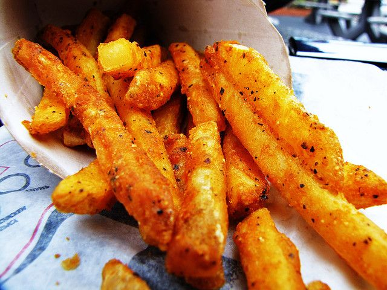

Chef's Special Vegan Veggie Burger
Specially grilled veg patties are basted with our chef's special recipe, topped with fresh onions,lettuce ,tomato and cheese with toasted brioche buns.

Chef's Special Hot Crispy Chicken Burger
Crispy chicken burger with secret recipe, served on a toasted brioche bun, with jalapenos, homemade honey-mustard coleslaw, crunchy lettuce & hot sause.

Chef's Special Beef BBQ Burger Patties
Specially grilled double beef patties are basted in homemade barbecue sauce, topped with crispy onion strings, tomato with cheese toasted cheesy buns.

Chef's Special Seasoned Potato French Fries
Chef's fries!!! Freshly cut potatoes piping hot out of a clean fryer, with new oil, and properly salted, there is no greater experience in town with special ketchup.